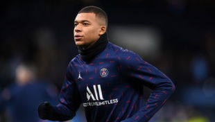
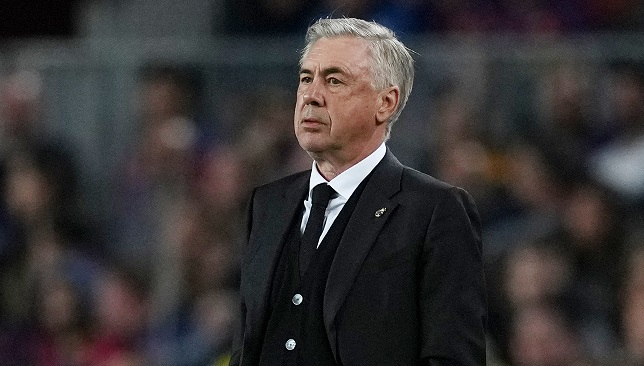

هل هو مصاب؟.. ديشان يوضح السبب وراء غياب مبابي عن لقاء ألمانيا
كشف ديديه ديشان مدرب منتخب فرنسا عن السبب وراء عدم مشاركة كيليان مبابي نجم باريس سان جيرمان الفرنسي مع المنتخب أمام ألمانيا.
وتعرض منتخب فرنسا للخسارة ودياً أمام ألمانيا بهدفين مقابل هدف، ولم يشارك كيليان مبابي في هذه المباراة، حيث شاهدها على مقاعد البدلاء.
وأشارت التقارير الصحفية قبل المباراة إلى أن كيليان مبابي قد تعرض للإصابة في ركبته، وسيغيب عن المباراة أمام ألمانيا لهذا السبب.
كيليان مبابي غاب عن لقاء فرنسا وألمانيا بسبب الإصابة

مبابي مصمم على الانتقال إلى ريال مدريد مجاناً
يبدو أن إغلاق سوق الانتقالات الصيفي، واستمرار كيليان مبابي
مع باريس سان جيرمان، لن يوقف مسلسل انتقاله إلى ريال مدريد طوال الموسم،
وهذا ما أكدته صحيفة ليكيب الفرنسية في تقرير جديد نشرته صباح اليوم الثلاثاء.
وأعلن كيليان مبابي عدم رغبته في تجديد عقده مع باريس سان جيرمان حتى صيف 2025،
وكان متوقعاً انتقاله إلى ريال مدريد هذا الصيف،
خصوصاً بعد أن ضغط عليه النادي الباريسي للرحيل باستبعاده من الفريق الأول، لكن الريال لم يقدم أي
عرض في نهاية المطاف، واللاعب أيضاً كان مصمماً على البقاء لسنة أخرى في ملعب بارك دي برانس.

أنشيلوتي يعلق على مواجهة ريال مدريد ونابولي وصفقة مبابي
علق كارلو أنشيلوتي، المدير الفني لفريق ريال مدريد الإسباني، على مواجهة نابولي الإيطالي، في مسابقة دوري أبطال أوروبا.
فرعة دور المجموعات لدوري أبطال أوروبا كانت قد أوقعت الميرنجي في المجموعة الثالثة، مع كل من، نابولي الإيطالي، يونيون برلين الألماني وسبورتينج براجا البرتغالي.
الميرنجي يستقبل نظيره خيتافي، مساء غد السبت، في الجولة الرابعة من الدوري الإسباني، على ملعب سانتياجو برنابيو.